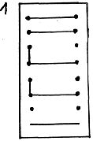
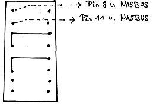
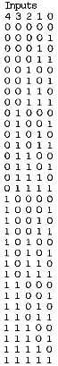
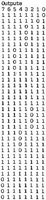

80-Bus Journal |
Juni 1983 · Ausgabe 6 |
eine elegante Lösung anstrebt und seine Ports nicht für andere Zwecke benötigt, kann die Umschaltung per Software vornehmen. Bei E. Moser ist diese Variante in Betrieb.
Erweiterung des Nascom-2-Motherboards um 16 KByte RAM
Hierzu sind folgende Änderungen am Nascom-2-Motherboard notwendig :
1.) Pin 13 von IC 46 (74 LS 155 ) wird hochgebogen und mit A12 verbunden. Am sinnvollsten greift man A12 vom Pin 9 am LKB 9 ab.
2.) A10 (abzugreifen am Pin 11 von LKB 9) wird mit Pin 7 von LKB 1 bis LKB 8 verbunden ( Durchschleifen! ).
3.) Brücken in LKB 1 bis LKB 8 verdrahten. In LKB 1 bis LKB 8 sind jeweils folgende Brücken herzustellen:
Pin 5 – Pin 1
Pin 6 – Pin 2
Pin 8 Pin 4
4.) IC 47 (PROMN2MD) austauschen. Ein neu programmiertes PROM, Typ TBP18SA030N von TEXAS wird nach Tabelle 1 programmiert.
5.) LKS 1 verdrahten:
5a) Motherboard Memory-Area = 1000H bis 4FFFH (wenn NAS-SYS benutzt wird)

LSW 1/7 = DOWN
LSW 1/8 = DOWN
5b) Motherboard Memory-Area = 8000H bis BFFFH (wenn CLD-DOS und 32K-Memorykarte benutzt werden)

LSW 1/7 = DOWN
LSW 1/8 = DOWN
6.) Einsetzen der RAMS (2k*8) in die Sockel IC 35 bis IC 42.
Verwendet werden können folgende RAMS:
HM
6116
(L)P von Hitachi
TMM 2016 P von Toshiba
TMS 4016 von TI
Dabei entstehende Zusammenhänge zwischen physikalischen und logischen Adressen zeigt Tabelle 2.
Ein programmiertes PROM N2MD kann vom Verfasser gegen Zusendung eines Verrechnungsschecks über DM 10.– bezogen werden.
8 RAMS vom Typ HM 6116 P-3 können ebenfalls über den Verfasser bezogen werden gegen Zusendung eines Verrechnungsschecks über DM 145.–. Ein Datenblatt vom HM 6116 wird beigelegt.
Anschrift: Gerd Reinehr __________ __ ____ Neuhausen a.d.F.
|  |  |
| Seite 22 von 28 |
|---|